本文直接搬运了我的有关课程报告，如有用词生硬等问题请多见谅。
让我们开始吧。
燃料最优月面软着陆问题求解
数学模型建立
以月面为原点、竖直向上为正方向，设登月舱高度 h(t)、速度 v(t)（向上为正）、质量 m(t)，发动机推力 u(t) 满足：
0≤u(t)≤a
月球表面重力加速度 g 为常数，燃料消耗率 m˙=−ku，k>0。状态方程为：
h˙(t)v˙(t)m˙(t)=v(t),=m(t)u(t)−g,=−ku(t).
初始状态 h(0)=h0, v(0)=v0, m(0)=M+F(0)（其中 M 为不含燃料的舱体质量，F(0) 为初始燃料质量）。要求实现月球表面软着陆，即目标集:
Ψ1=h(tf)=0,Ψ2=v(tf)=0
性能指标为燃料消耗最小，等价于最大化终端质量，故取
J=−m(tf)
极小值原理与最优控制形式
引入协态变量 λ1,λ2,λ3，构造哈密顿函数:
H=λ1v+λ2(mu−g)−λ3ku.
最优协态方程为:
λ˙1λ˙2λ˙3=−∂h∂H=0,=−∂v∂H=−λ1,=−∂m∂H=m2λ2u.
由终端约束及性能指标可得横截条件:
λ1(tf)=γ1,λ2(tf)=γ2,λ3(tf)=−1,
其中 γ1,γ2 为目标集引入的两个拉格朗日乘子。
将 H 中含有控制 u 的项分离：
H=(λ1v−λ2g)+s(t)(mλ2−kλ3)u.
根据极小值原理，u 需极小化 H，由线性项系数 s(t) 的符号可得最优控制为 Bang‑Bang 形式：
u∗(t)={a,0,s(t)<0,s(t)>0.
式中 s(t)=mλ2−kλ3 称为开关函数。
控制序列分析与切换结构
由协态方程可知 λ1 为常数，故 s(t) 的导数为:
s˙(t)=dtd(mλ2−kλ3)=m2λ˙2m−λ2m˙−kλ˙3=−mλ1.
若 s(t) 在某区间恒为零，则 λ1≡0，进而 λ2≡0，λ3≡0，与 λ3(tf)=−1 矛盾。故 s(t) 不恒为零且严格单调，至多一次过零。因此可能的控制序列为：
-
全程 u∗=a（消耗大，甚至可能反推离开）；
-
全程 u∗=0（自由落体，硬着陆）；
-
{0,a}：先零推力，后最大推力；
-
{a,0}：先最大推力，后零推力（后期无制动，硬着陆）；
-
多次切换。（可自行证明，非最优）
排除不可能及非最优序列后，唯一可行的最优控制序列为 {0,a}，即存在切换时刻 τ，使得：
u∗(t)={0,a,0≤t<τ,τ≤t≤tf.
相轨迹与开关曲线
在 [0,τ) 上，u∗=0，由状态方程积分得自由落体相轨迹:
h=h0−2g1v2,
在 (v,h) 相平面上为一组开口向下的抛物线，运动方向自右向左。
在 [τ,tf] 上，u∗=a，软着陆条件 h(tf)=v(tf)=0 决定了一条从切换点 (τ) 到原点的相轨迹。利用 v˙=a/m−g 和 m˙=−ka 可得:
v(τ)h(τ)=k1ln(1−m(τ)katd)+gtd,=−k2am(τ)ln(1−m(τ)katd)−2gtd2−ktd,
其中 td=tf−τ。消去 td 可得到 f[v(τ),h(τ)]=0，表示从该曲线上任一点出发，以 u=a 制动均可实现软着陆。采用对数展开:
ln(1−m(τ)katd)≈−m(τ)katd−2m2(τ)k2a2td2,
可得近似开关曲线:
f(h,v)=b1b2h+2b1h+v=0,
其中 b1=21[m(τ)a−g]>0，b2=21m2(τ)ka2。
仿真实验与分析
理想开关曲线
尝试使用MATLAB绘制最优相轨迹如图所示。
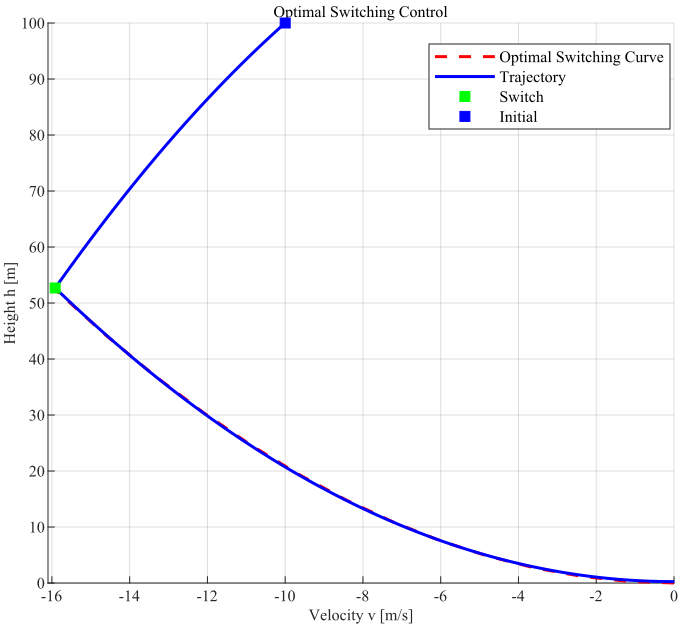
各相关参数如下表。
| 参数 |
数值 |
单位（均取国际单位制） |
| 着陆时间 tf |
10.21 |
s |
| 消耗燃料 Δm |
13.09 |
kg |
| 切换时刻 ts |
3.66 |
s |
| 最大推力使用时间 |
6.56 |
s |
下面按顺序展示了航天器高度、速度、质量和协态变量、控制量、切换函数。
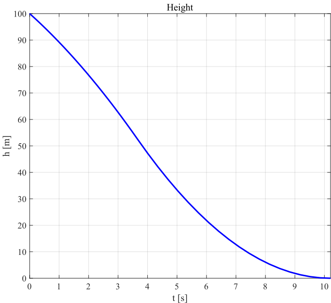
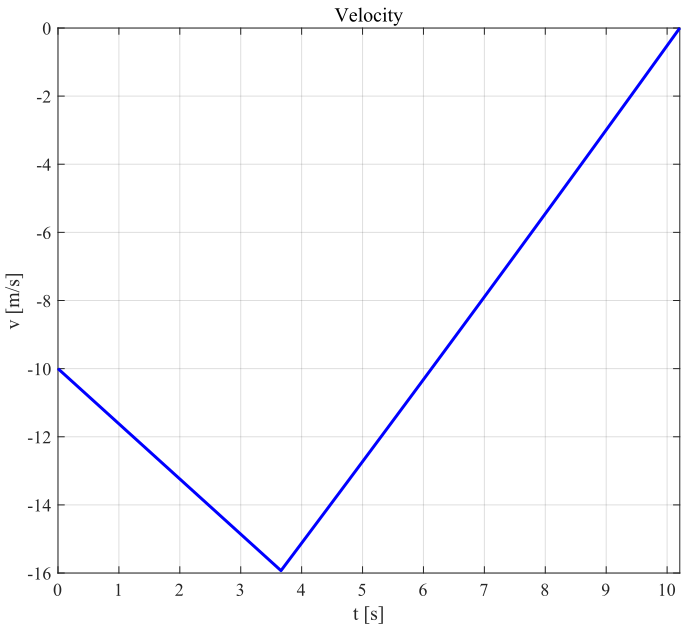
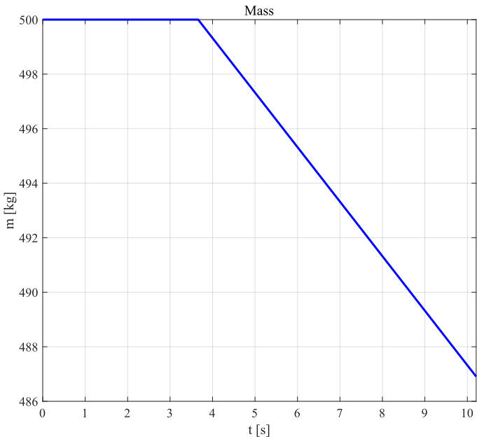
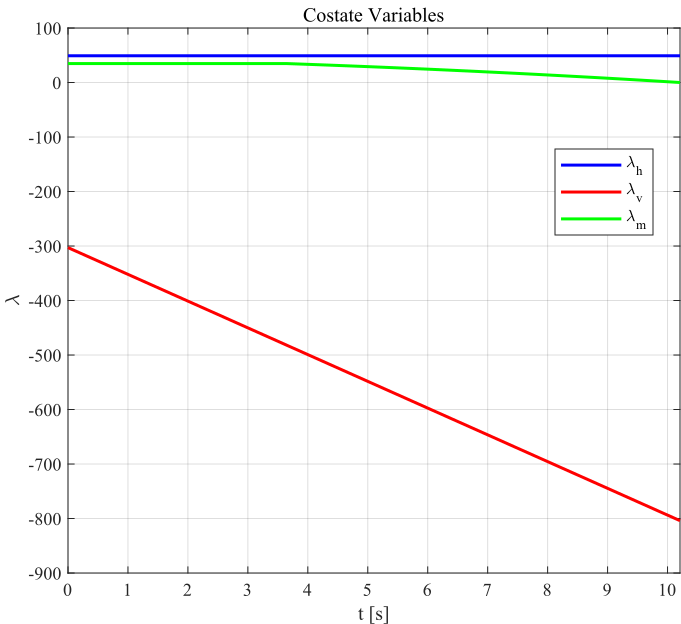
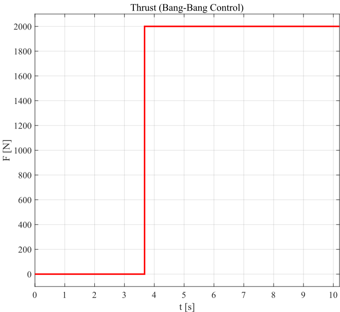
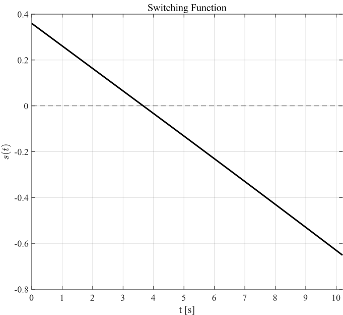
可清晰观察到推力呈现 Bang-Bang 特性，且s(t) 在切换时刻过零，验证了极小值原理的最优性条件。
闭环反馈控制律
根据前面的分析最优控制可通过判断当前状态 (h,v) 是否已经到达开关曲线 f(h,v)=0 来实现反馈：
u∗(t)={0,a,f(h,v)>0,f(h,v)=0.
其中:
f(h,v)=b1b2h+2b1h+v=0,
该控制律将开环控制改为闭环控制，既便于工程实现，又增强了系统的鲁棒性。下面展示Simulink仿真模型：
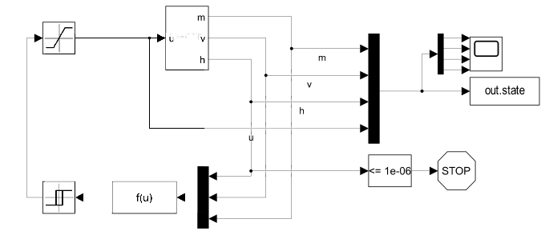
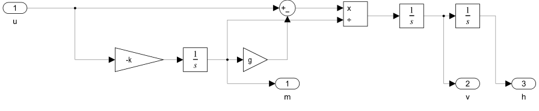
其中f(u)即接收状态变量计算开关值的函数。
经过仿真发现，若严格判断f(h,v)与0的关系（即采用ε=0），则航天器最后将发生硬着陆。这是因为近似开关曲线f(h,v)=0相对于真实的最优开关曲线存在系统偏差。
由f(h,v)的推导过程可知，该近似表达式忽略了对数展开中的高阶项3m3(τ)k3a3td3+⋯，导致近似曲线在(h,v)相平面中左偏。对于同一高度h，近似曲线给出的临界速度∣vapprox∣大于真实临界速度∣vexact∣。这意味着当检测到f(h,v)=0时，航天器的实际高度已经过低（或速度过大），剩余制动距离不足以将速度减至零，从而以非零速度撞击月面。下图验证了本段讨论。
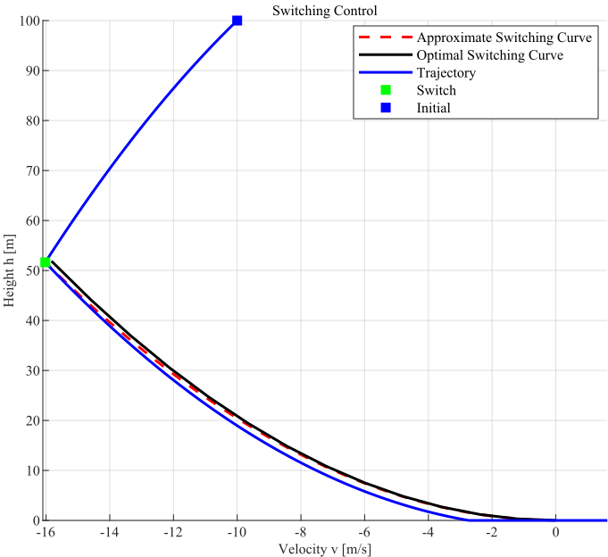
若考虑加入充分小的ε>0，判断f(h,v)与ε的关系（即f(h,v)≤ε时开启制动），这相当于在近似曲线右侧引入了一个边界层：
Γε={(h,v)∣f(h,v)=ε}.
该边界层的物理意义是提前触发制动，用以补偿近似曲线对制动时机的高估。然而，ε的选取需要权衡：若ε过小，则补偿不足，仍可能硬着陆； ε过大制动过早，此时补偿后的近似曲线成为系统的一个滑动模态，相轨迹将反复穿越开关曲线，产生抖振现象。
抖振的机理可从开关函数f(h,v)的动态行为解释。当系统状态进入边界层后，推力在0和a之间高频切换：
u(t)={a,0,f(h,v)≤ε,f(h,v)>ε.
由于f(h,v)对v和h均敏感，且v的变化率v˙=u/m−g在推力切换时发生跳变，导致f的符号在零点附近振荡。尤其在h较小时，2b1h项对h的微小变化非常敏感，即使高度略有波动，也会引起f的快速变号，从而产生高频颤振。下图是这一现象的示意图。
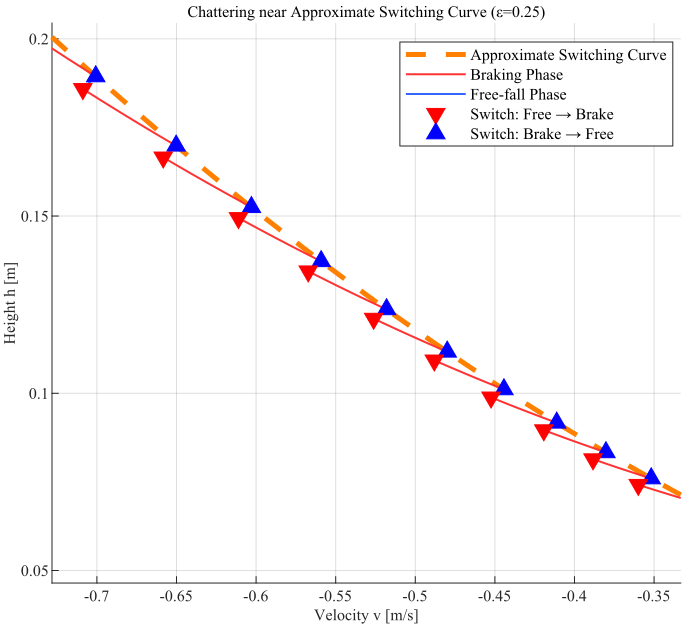
引入ε=0.25进行仿真，其状态变量见下，可以观察到在接近着陆点时，发生了抖振。为了抑制这一现象，可以考虑引入饱和控制，也可以增加高度h的容忍，即提前终止控制。将对高度h的容忍设置为0.01，即当h≤0.01时认为已到终点。可见抖振现象已基本得到缓解。
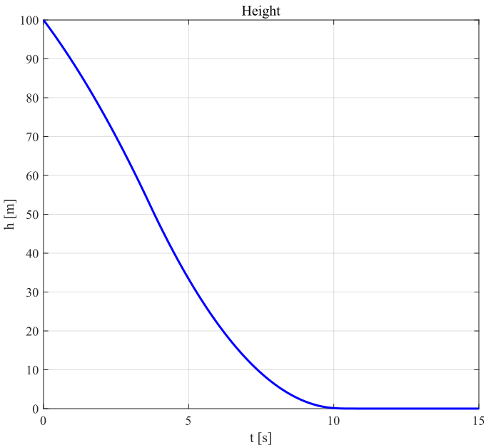
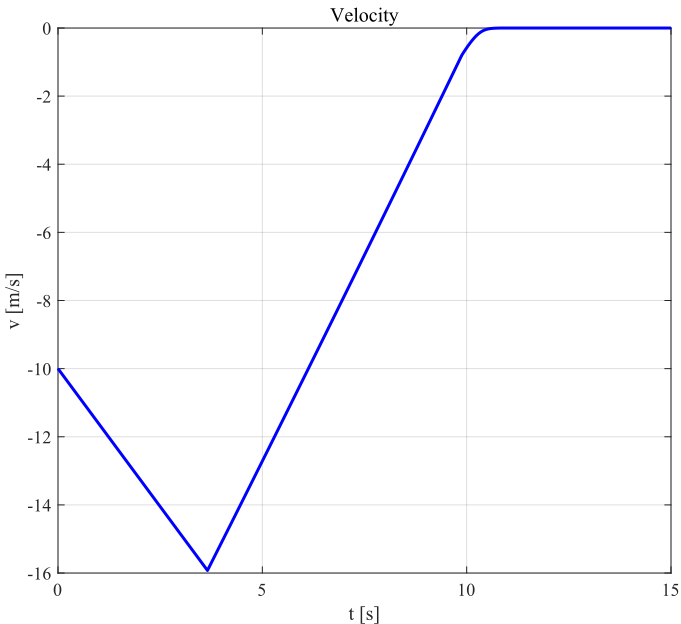
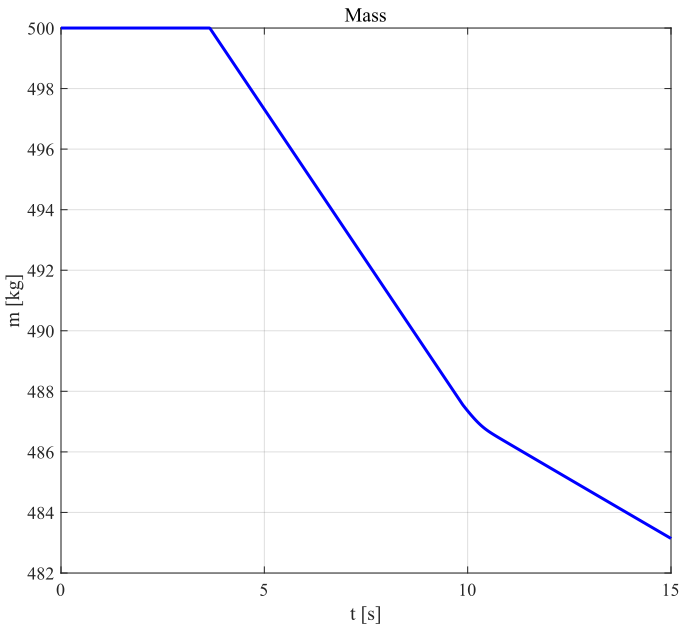

增加高度容忍后：